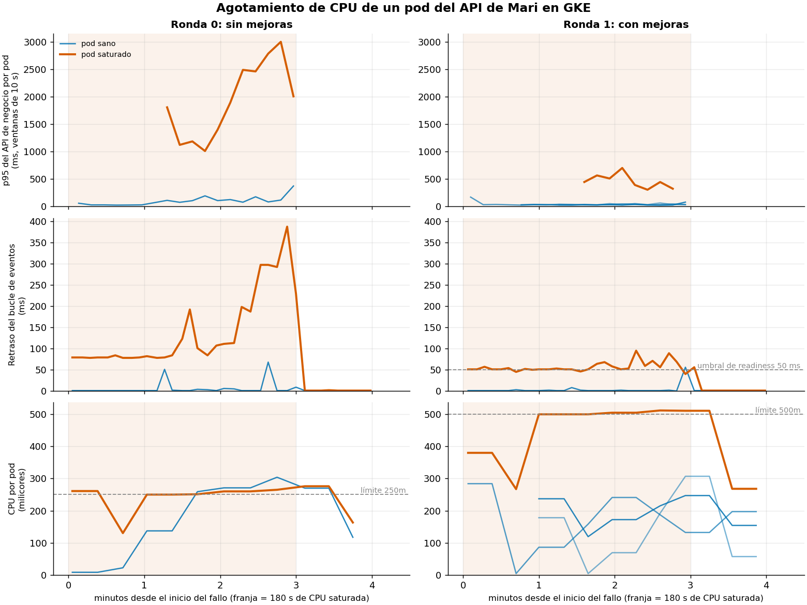

Informe de experimento de caos (DevOps) · Mari, Google Cloud · 14 de noviembre de 2026
El flujo del grupo entra por el coordinador (Azure, Juan), consulta la API de Pipe (AWS) y la API de Mari, que corre en GKE con dos réplicas detrás de la IP pública 34.68.14.217 y se conecta a Cloud SQL por proxy. Cada petición lleva un X-Trace-Id que queda en los logs de las tres nubes. Se inyectó una falla real, un pod que consume CPU durante 3 minutos, y se midió el efecto con un perfil de carga fijo. La ronda 0 refutó la hipótesis (p95 de 3.425 ms contra un máximo de 1.511 ms). Tras aplicar tres mejoras de configuración, la ronda 1 la cumplió con un p95 de 774 ms.
Perfil fijo (k6): tres tramos consecutivos de 60 s con 5, 15 y 30 usuarios virtuales, contra el flujo completo GET /api/v2/trades/5540 en el coordinador. Es el mismo en el estado estable y en las dos rondas. Estado estable: tres corridas sin ninguna falla, con el sistema sin tráfico ajeno (las 21.302 llamadas esperadas coinciden con las vistas en los logs del API).
| Corrida | Flujos | Éxito | p50 | p95 | p99 |
|---|---|---|---|---|---|
| 1 | 3.693 | 100 % | 418 ms | 1.208 ms | 1.714 ms |
| 2 | 3.634 | 100 % | 450 ms | 1.200 ms | 1.594 ms |
| 3 | 3.324 | 100 % | 450 ms | 1.479 ms | 1.934 ms |
| Mediana | 20,1 req/s | 100 % | 450 ms | 1.208 ms | 1.714 ms |
El umbral X = 1.511 ms es el p95 mediano más un 25 % de margen, fijado antes de ejecutar la falla. Un dato que importa más adelante: con esa carga cada pod ya llegaba a unos 310 m de CPU con un límite de 250 m, así que en estado estable trabajaba sin holgura.
Hipótesis: dado el perfil P, cuando la CPU de un pod de la API de Mari llegue al 100 % durante 3 minutos, el flujo mantendrá una tasa de éxito ≥ 99 % y un p95 ≤ 1.511 ms. Métrica objetivo: latencia p95 del flujo y tasa de éxito. Instrumento: k6 (resumen JSON por corrida), con kubectl top, el retraso del bucle de eventos de cada pod (/metrics) y los logs por trace id como apoyo para el diagnóstico. Ventana: 3 minutos de consumo más la recuperación; el experimento corre 8 minutos con la reversión.
El experimento es código (caos/experimentos/03-agotamiento.json, Chaos Toolkit) y una sola ejecución es una ronda completa: comprueba el estado estable (la API responde y hay réplicas listas); enciende el interruptor de fallos; arranca el muestreo y lanza k6 en paralelo; satura un pod con POST /fault/cpu (hilo que quema CPU, solo con el interruptor encendido y la cabecera X-Inject-Fault: cpu); a los 165 s lee el consumo de cada pod; calcula el veredicto contra X; y revierte. El consumo tiene tope de 600 s y se detiene solo a los 180 s.
Radio de impacto: un solo pod de la API de Mari; la otra réplica no se toca; tráfico sintético de k6. Reversión (probada antes de la primera ejecución): DELETE /fault/cpu en cada pod y FAULT_HEADER_ENABLED=false con reinicio; corre siempre, aunque el experimento falle. Condiciones de aborto: éxito del flujo < 50 %, p95 > 15 s sostenido durante 30 s, o cualquier error al detener el consumo. Como cada reinicio de pods o carga de k6 pisa las mediciones del resto del grupo, las acciones se niegan a correr si el API recibió peticiones en los últimos 45 s y cada ventana se acordó con los tres.
| Métrica | Estado estable | Ronda 0 | Veredicto |
|---|---|---|---|
| Éxito | 100 % | 100 % (0 fallos en 2.682 flujos) | cumple |
| p95 del flujo | 1.208 ms | 3.425 ms (+183 %; X = 1.511 ms) | no cumple |
| p99 / máximo | 1.714 ms / n.d. | 4.596 ms / 5.945 ms |
Modo de fallo: degradación sin errores. El pod saturado no devolvió errores; respondió con lentitud. Por eso la tasa de éxito no cambió y la sonda de readiness, que solo comprobaba que el proceso contestara, nunca lo sacó del balanceo.
Diagnóstico (logs por trace id, retraso del bucle y CPU). En el pod saturado el retraso del bucle subió de 1 ms a una mediana de 79 ms (máximo 387 ms) y su CPU quedó pegada al límite de 250 m. En los logs, el pod saturado atendió el API con p50 de 1.490 ms y p95 de 2.615 ms; el sano, con p95 de 110 ms. El trace id k6-1-134 lo muestra en una sola iteración: sus dos llamadas al API tardaron 2.399 ms (partidos) y 3.704 ms (predicciones), las dos en el pod saturado; con el mismo trace id, en la ronda 1 tardaron 19 y 18 ms en un pod sano. Como el flujo espera a esa respuesta, el p95 extremo a extremo subió aunque la mediana se mantuvo (400 ms): la mitad del tráfico seguía llegando a un pod sano, y esa cola larga son las peticiones que cayeron en el saturado.

Figura: las dos rondas, un panel por métrica (franja = ventana de inyección). Datos y reproducción en caos/tablero/.
| Mejora | Cambio | Por qué (dato de la ronda 0) |
|---|---|---|
| Readiness que saca del balanceo al pod saturado | La sonda falla si el retraso del bucle supera 50 ms (READINESS_LAG_MS=50); revisa cada 5 s y retira el pod tras 2 fallos (antes 30 s) | El pod saturado superó 50 ms en 27 de 36 muestras; el sano solo en 2 de 36 (picos aislados) |
| Requests y limits | CPU 200 m / 500 m (antes 100 m / 250 m) | Con 250 m los pods ya estaban al límite en estado estable: no había holgura ni para el flujo sano |
| HPA por CPU | 60 %, mínimo 2 y máximo 4 réplicas | Capacidad adicional cuando un pod pierde rendimiento: se amplía en vez de repartir su carga entre los demás |
Las tres son solo de configuración: el código de la API no cambió entre las rondas. El umbral de 50 ms sale de la medición de la ronda 0, no de una cifra elegida de antemano.
Mismo perfil, mismo fallo, misma duración, mismo pod objetivo (el primero de la lista de pods vivos).
| Métrica | Estado estable | Ronda 0 | Ronda 1 | Variación ronda 1 frente a ronda 0 |
|---|---|---|---|---|
| Tasa de éxito | 100 % | 100 % | 100 % | sin cambio |
| p50 | 450 ms | 400 ms | 405 ms | +1,3 % |
| p95 | 1.208 ms | 3.425 ms | 774 ms | −77,4 % |
| p99 | 1.714 ms | 4.596 ms | 1.082 ms | −76,5 % |
| Máximo | n.d. | 5.945 ms | 1.571 ms | −73,6 % |
| Flujos completados | ~3.700 | 2.682 | 4.264 | +59,0 % |
| p95 frente a X = 1.511 ms | −20 % | +127 % | −49 % | cumple la hipótesis |
Conclusión sobre la hipótesis: en la ronda 0 se refuta (p95 de 3.425 ms) y en la ronda 1 se sostiene (774 ms, incluso por debajo del estado estable, 1.208 ms, porque ahora hay más CPU por pod). El pod saturado siguió quemando CPU toda la ventana (llegó a 500 m, su nuevo límite, con retraso del bucle de 51 ms de mediana); lo que cambió es cuánto tráfico recibió: entre el minuto 1 y el 3 atendió entre un 2 % y un 8 % de las llamadas, frente al 6 % al 34 % de la ronda 0, y sus respuestas, aunque más lentas que las de sus vecinos (p95 de 569 ms contra 28 a 43 ms), dejaron de dominar la cola. El HPA pasó de 2 a 4 réplicas en el primer minuto de carga.
Límites de la comparación: una sola ejecución por ronda; las tres mejoras se aplicaron juntas, así que no se separa lo que aportó cada una; y la ronda 1 tiene más capacidad que la 0 por diseño. El p95 de k6 incluye la red y las otras nubes del flujo.
Hallazgos. (1) Falla gris: un pod degradado no produce errores, y ni la disponibilidad ni la tasa de éxito lo detectan; solo la latencia o la señal de saturación lo muestran. (2) Sin holgura de serie: el dimensionamiento inicial dejaba a los pods sanos en su límite de CPU. (3) El reparto del tráfico no es parejo: durante el primer minuto y medio de carga (5 usuarios) el pod saturado no recibió ni una llamada del API en ninguna de las dos rondas, y su parte creció al llegar más usuarios. La explicación probable es que el coordinador reutiliza conexiones y el balanceador reparte por conexión y no por petición; no se verificó y queda como línea de estudio. (4) El HPA cambia lo que se compara: el nodo extra tardó unos 3 minutos en aparecer, y la sonda del experimento que exigía exactamente 2 réplicas marcó el journal de la ronda 1 como "deviated"; se cambió a "entre 2 y 4". (5) El método también falló y se corrigió: la ronda 0 necesitó cuatro intentos porque la guarda de tráfico se contaba a sí misma, el experimento eligió un pod que se estaba terminando (sin confirmar que el consumo empezara, un experimento que no ocurre da un veredicto idéntico a uno real) y el journal se cortaba por codificación. Cada corrección quedó en el código.
Riesgo abierto: si todos los pods saturaran a la vez, la readiness por saturación dejaría el balanceador sin destinos y la caída sería total.
| Backlog (prioridad) | Acción |
|---|---|
| 1 · Alta | Límite de concurrencia por pod que responda 503 rápido en vez de encolar, y timeouts y circuito abierto en las llamadas del coordinador, para que la saturación sea un error acotado y no una cola |
| 2 · Alta | Alerta sobre el retraso del bucle y la latencia p95 por pod: hoy una falla gris solo se ve en el tablero |
| 3 · Media | HPA por latencia o peticiones por segundo además de CPU, y capacidad de reserva en nodos para no esperar 3 minutos |
| 4 · Media | PodDisruptionBudget, clúster regional (hoy es de una sola zona) y repetir la ronda varias veces para dar un intervalo al p95 |
| 5 · Baja | Enviar las métricas de la API a Grafana Cloud con service.name propio y correr este experimento como puerta del pipeline |